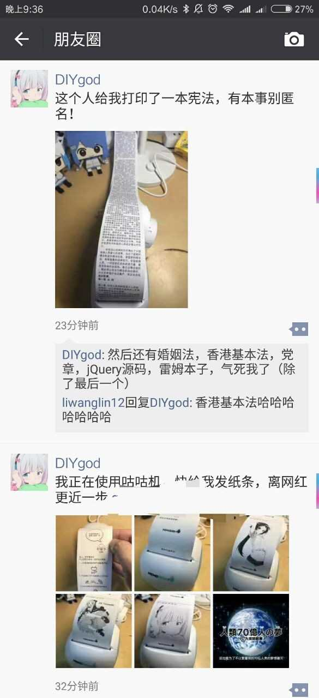

玩法推荐「工作学习」
1 学习资料打印
（日历，不太清晰的原因是打印源头是爱疯日历的截图。所以它打图片真的效果有点差。。）
（待办事项清单）
（打印网上看到的干货资料等等，复制再打印，特别清晰，太方便。还可以打一些食谱，攻略，美妆贴士啦啥的。 强烈推荐把微博微信收藏夹的内容扫一遍，该打的打下来，它们应该快发霉了吧。。。 。）
2.「社交生活」
（打点剧照，喜欢明星的照片，微信表情等等等）
（随手涂鸦。不会画画只能写丑字了哈哈。）
（这是咕咕鸡打出来的第一个孩子，想模仿超市小票搞个笑，但是不太成功。。因为朋友问我，你才吃饭啊？也许是太逼真了都懒得看内容吧。。。。）
（最喜欢咕咕鸡的纸条功能，有小时候上课传纸条的幸福感。。 咕咕鸡可以邀请所有微信好友给你发纸条，只需要扫描二维码后，输入纸条内容。匿名的人发的内容显示为FROM：你猜。 除此之外，还把咕咕鸡化作留言神器，回家看到一长串朋友的留言，实在太有存在感哈哈哈。）
高能玩法！！
还有以下为！！！高能预警
